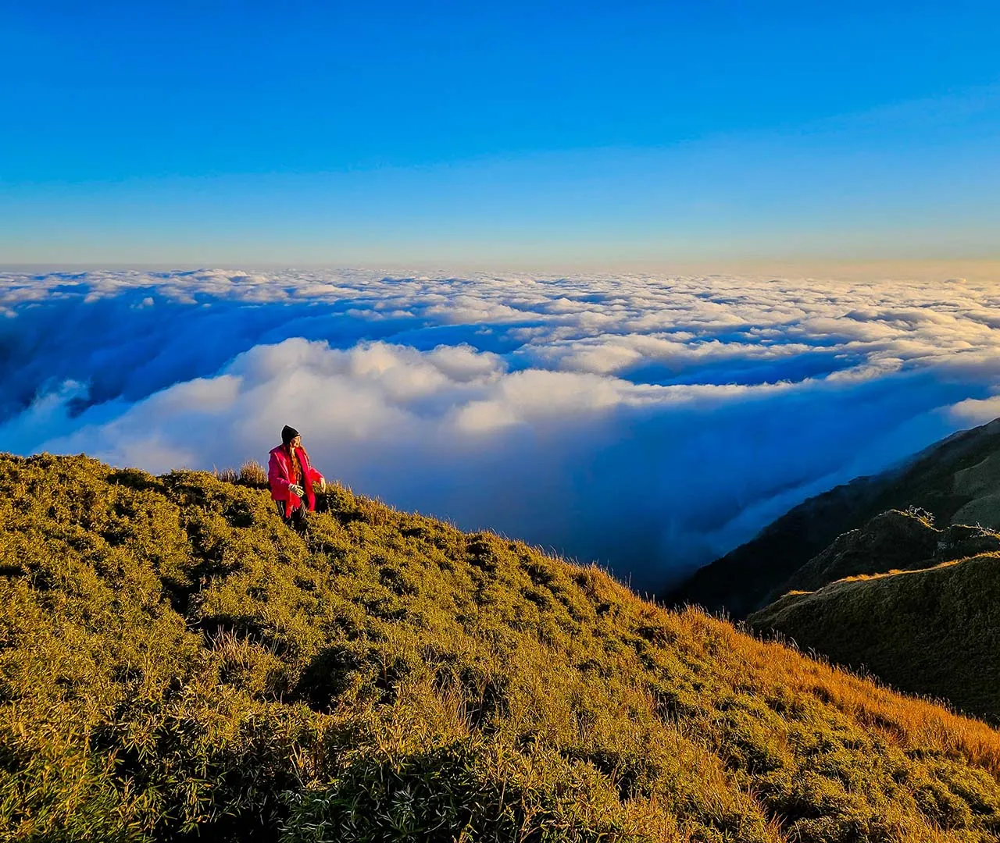

Mt. Pulag is the highest peak in Luzon at 2,922 meters — a sacred mountain in Benguet where trekkers rise before dawn to witness the legendary sea of clouds at sunrise, floating above a carpet of dwarf bamboo and mossy forest.

Mt. Pulag (2,922m) is the highest mountain in Luzon and the third highest in the Philippines. Located in Benguet province in the Cordillera Administrative Region, it is a protected national park and one of the most biodiverse mountain ecosystems in the country.
The mountain is sacred to the indigenous Ibaloi, Kankanaey, and Kalanguya peoples who have lived on its slopes for centuries. They believe the mountain is the dwelling place of their ancestors' spirits, and trekkers are expected to approach it with respect.
The main attraction is the sea of clouds — a breathtaking phenomenon where clouds fill the valleys below the summit at dawn, creating the illusion of floating above a white ocean. The summit trail passes through unique dwarf bamboo grasslands and mossy forest ecosystems found nowhere else in Luzon. Temperatures at the summit can drop to near freezing at night.
Mt. Pulag is accessed via Kabayan, Benguet — the jump-off point for the Ambangeg Trail (most popular) and other routes. Registration is mandatory at the DENR office.
Take a bus from Manila to Baguio City (~5₱6 hours). Baguio is the main staging point for Mt. Pulag treks. Most trekkers spend a night in Baguio before heading to the mountain.
Bus: ~5₱6 hrs | ~₱400–₱600From Baguio, take a van to Kabayan (~3₱4 hours) or directly to the Ambangeg Ranger Station (~2.5 hours). The Ambangeg Trail is the most popular and accessible route to the summit.
Van: ~₱150–₱250 | — ~2.5₱4 hrsAll trekkers must register at the DENR Ranger Station and pay the entrance and environmental fees. A licensed guide is mandatory for all routes. Book your guide in advance through accredited tour operators.
Fees: ~₱200–₱500 | Guide: mandatoryThe Ambangeg Trail takes 3₱4 hours to the summit. Most trekkers do an overnight camp to wake before dawn for the sea of clouds. The trail passes through pine forest, mossy forest, and the iconic dwarf bamboo grasslands near the summit.
Ambangeg Trail: ~3₱4 hrs | Overnight camping recommendedClick any pin to explore Mt. Pulag, Kabayan, and the key sites of Benguet province.
The classic Mt. Pulag overnight trek — arrive at the ranger station in the afternoon, camp near the summit, and wake before dawn for the sea of clouds.
Arrive at the Ambangeg Ranger Station in the early afternoon. Register, pay fees, meet your guide, and pack your gear. Begin the trek in the late afternoon to reach the campsite before dark.
Trek through pine forest and mossy forest to the designated campsite (~2₱3 hours). Set up camp, cook dinner, and rest early — you'll be waking at 3 AM.
If skies are clear, the summit area offers extraordinary stargazing — at 2,900m with minimal light pollution, the Milky Way is visible on clear nights.
Wake before dawn and trek to the summit (~1 hour from camp). Arrive before sunrise and wait for the sea of clouds to form as the sun rises over the Cordillera mountains. One of the most extraordinary natural spectacles in the Philippines.
After sunrise, descend back to camp, pack up, and trek down to the ranger station. The descent takes 2₱3 hours. Return to Baguio for a well-earned meal and rest.
"Standing on the summit of Mt. Pulag at sunrise, watching the sea of clouds fill the valleys below while the sky turned pink and gold — it was the most beautiful thing I have ever seen in the Philippines. The cold, the early wake-up, the long trek — all of it was worth it for that single moment. Mt. Pulag is a life-changing experience."
"Mt. Pulag was my first serious mountain trek and it exceeded every expectation. The dwarf bamboo grasslands near the summit are unlike anything I've seen — it looks like a scene from a fantasy film. The sea of clouds at sunrise was extraordinary. Our guide was excellent — knowledgeable, encouraging, and deeply respectful of the mountain's sacred significance to the indigenous communities."